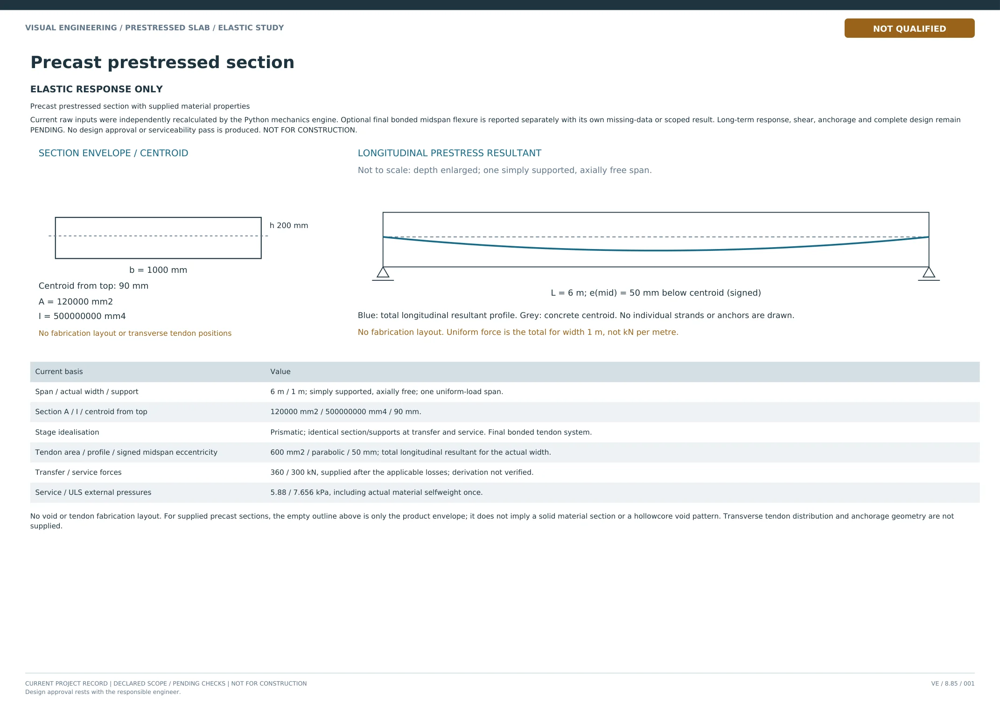

Precast prestressed section
The 6 m training strip has a supplied material area of 120,000 mm², a second moment of area of 500 million mm⁴ and a centroid 90 mm below the top face. The self-weight is 2.88 kPa. The external ultimate bending demand is 34.452 kNm.
Inspect the stresses at transfer and in service, the short-term deflection and the bearing reactions. The example uses illustrative section properties and prestress forces. The engineer must verify the actual product, strength, lifting, erection and bearing conditions.
Loading the report…
